Creating publication-quality figures with Matplotlib
Jean-Baptiste Mouret -- mouret@isir.upmc.fr / http://pages.isir.upmc.fr/~mouret
Introduction
- This tutorial is hosted on github: don't hesitate to clone the repository and send pull requests. You can access to the repository here <http://github.com/jbmouret/matplotlib_for_papers>.
Goal
Create nice figures for scientific papers
Specific focus on the needs for artificial life and evolutionary computation (use cases: fitness over time, box plot to compare two treatments)
From the basics to the useful advanced features: I will not only explains the basics: I will guide you until you get a modern, publication-quality figure.
I will not try to cover every possible plots or every options: this tutorial is not a replacement for the documentation or the already existing tutorials.
For another tutorial about "good" design with matplotlib: http://nbviewer.ipython.org/gist/olgabot/5357268 ; most of the suggested best practices have been incorporated in prettyplotlib, an add-on to matplotlib. We are not using this library here because our goal is to teach how to customize matplotlib to your own needs, but many of our suggestion are similar to those performed by prettyplotlib.
Design is always a personal choice: do your own choices, but take the time to learn the current best practices before choosing to ignore them!
For a more classic and general introduction to matplotlib, check the nice tutorial made by N. Rougier: http://www.loria.fr/~rougier/teaching/matplotlib/ [from whom I took the css, thanks to him].
For some inspiration about what is possible, check:
- the Matplotlib gallery: http://matplotlib.org/gallery.html
- the Matplotlib examples: http://matplotlib.org/1.3.1/examples/
- another gallery: https://github.com/rasbt/matplotlib-gallery
- and another one: http://nbviewer.ipython.org/github/cs109/content/blob/master/lec_03_statistical_graphs.ipynb
Examples of figures:
Reference
Tonelli, Paul, and Jean-Baptiste Mouret. "On the relationships between generative encodings, regularity, and learning abilities when evolving plastic artificial neural networks." PloS one 8.11 (2013): e79138.

Reference
Clune*, Jeff, Jean-Baptiste Mouret*, and Hod Lipson. "The evolutionary origins of modularity." Proceedings of the Royal Society B: Biological sciences 280.1755 (2013): 20122863 [*: equal contribution].


What is Matplolib?
Principle
- Library based on Python (easy) and compatible with numpy (powerful math library for Python):
- Python script -> pdf/svg/png file
- can be used with ipython (interactive use)
- can use everything from Python (libraries): numpy, stat packages, low-level functions, file loaders, ...
- => Everything is possible! (but it sometimes requires some effort)
- portable
- open source (GPL)
Installation
- OSX: install brew, then use it to install pip, and use pip to install matplotlib (!).
# install brew: ruby -e "$(curl -fsSL https://raw.github.com/Homebrew/homebrew/go/install)" # matplotlib will need freetype brew install freetype # pip is a package manager for python: https://pypi.python.org/pypi brew install pip # now use pip to install matplotlib pip install numpy pip install matplotlib
- More info / alternative approaches:
- you can install Canopy Express (full python environment for scientists): https://store.enthought.com/
- http://www.tapir.caltech.edu/~dtsang/python.html
- http://penandpants.com/2012/02/24/install-python/
- Debian / Ubuntu:
sudo apt-get install python-matplotlib
- Windows: install Canopy Express
Alternatives
- Gnuplot:
- easy to use
- open source (GPL)
- hard to do "complicated things"
- cannot pre-process your data (you need another script for this)
- Matlab:
- expensive
- closed-source
- does not deal very well with vector formats (SVG, PDF, EPS, etc.)
- R (ggplot2):
- open source
- steep learning curve, sometimes not very flexible
Basics
Your first plot
How to test?
- launch ipython --pylab and copy-paste the script (interactive use)
- or save the script in a file and execute it with python
- You can access to the source code by clicking on the figure
# Pylab includes numpy as 'np' from pylab import * # create an array of 256 points (x), from -pi to +pi x = np.linspace(-np.pi, np.pi, 256) # compute cos(x) [thanks to numpy, cos(x) returns an array] y = np.cos(x) # compute the plot plot(x, y) # Show it in a new window show()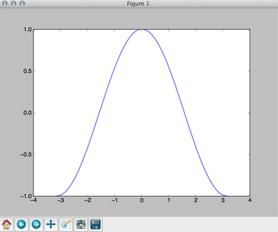
The show() function will create an interactive window in which you can zoom, move, and save the plot. If you want to save the plot to a file, use the function savefig('filename.extension') (Note: the function savefig must be called before function show if you call both functions). For example, to save our plot to a png file:
# Pylab includes numpy as 'np' from pylab import * # create an array of 256 points (x), from -pi to +pi x = np.linspace(-np.pi, np.pi, 256) # compute cos(x) [thanks to numpy, cos(x) returns an array] y = np.cos(x) # compute the plot plot(x, y) # save in test.png (use test.pdf for a pdf file) savefig("test.png")
Typical supported formats are (the exact list depends on the backend):
- pdf (vector format, useful for LaTeX papers compiled with pdflatex: no problem of resolution)
- svg (vector format, useful to edit the graph with inkscape or Adobe Illustrator)
- eps (vector format, useful for LaTeX papers compiled with the basic latex: no problem of resolution)
- png (loseless bitmap)
- jpg (do not use for plots)
- gif (do not use for plots)
Plotting some data
Matplotlib does not provide anything to load data from a file. However, since we are using python, we can use the standard methods to read a file. For instance, to read a file called "file.dat", which contains:
2.3 1.5 1.2 4 5 9
We can use a simple loop (this approach is useful if your file is not a pure array of numbers, or if you want to skip some lines, etc.):
data = [] for line in open('file.dat'): data += [float(line)] # to check print data
But we can also use numpy (one line of code):
# this will load numpy for us from pylab import * # load the file and store the result in data data = np.loadtxt('file.dat') print data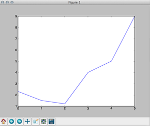
To plot the data, we use the same plot function as before. Don't forget to call show() if you want to see the plot on your screen (or savefig() if you want to save the plot).
# this will load numpy for us from pylab import * # load the file and store the result in data data = np.loadtxt('file.dat') # generate a x array of the size of the file x = np.arange(0, len(data)) # plot plot(x, data) show()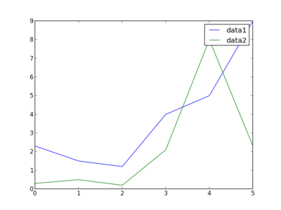
To plot several lines, just call plot several times (the color is automatically selected). We add a label to identify each plot and call legend() to add a legend.
# this will load numpy for us from pylab import * # load the file and store the result in data data = np.loadtxt('file.dat') data2 = np.loadtxt('file2.dat') # generate a x array of the size of the file x = np.arange(0, len(data)) # plot plot(x, data, label='data1') plot(x, data2, label='data2') legend() savefig('example2_bis.png')
Changing the color and the type of line
from pylab import * x = np.linspace(-np.pi, np.pi, 256) y = [] for i in range(0, 7): y += [np.cos(x + i)] plot(x, y[0], color='red', linewidth=2.5, linestyle='-', label='linestyle="_"') plot(x, y[1], color='blue', linewidth=5, alpha=0.5, linestyle='-', label='linestyle="-"') plot(x, y[2], color='#aa0000', linewidth=1, linestyle='--', label='linestyle="--"') plot(x, y[3], color='black', linestyle=':', label='linestyle=":"') plot(x, y[4], color='black', linewidth=2, linestyle='-.', label='linestyle="-."') legend() savefig('example1_color.png')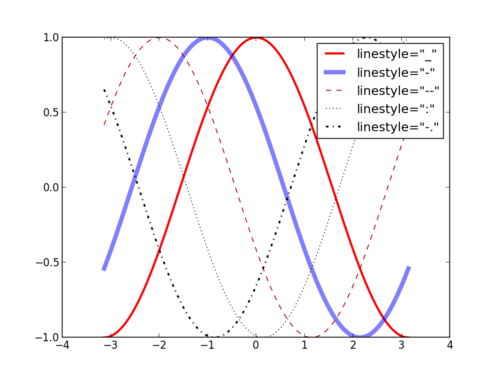
- Available linestyles: '_', '-', ':', '-.'
- Available colors:
- basic names ("red", "blue", etc.)
- HTML names ("#FF0000", ...)
- grayscale values ("0.9")
Setting the limits and the ticks
Documentation
Changing the limits:
xlim(min_value, max_value) ylim(min_value, max_value)
The ticks:
# with automatic labeling xticks(list_of_ticks_positions) yticks(list_of_ticks_positions) # with custom labels xticks(list_of_ticks, list_of_labels) yticks(list_of_ticks, list_of_labels)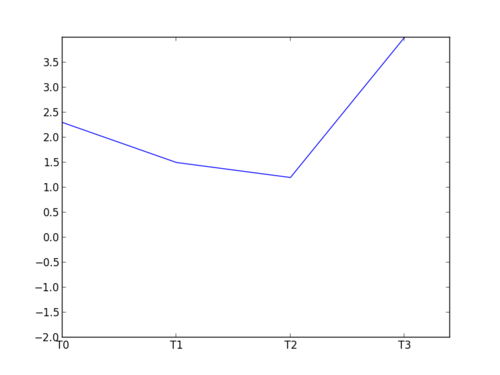
Example:
# this will load numpy for us from pylab import * data = np.loadtxt('file.dat') x = np.arange(0, len(data)) #change the limits xlim(1.5, 3.4) ylim(-2, 4) #ticks xticks([0, 1, 2, 3], ['T0', 'T1', 'T2', 'T3']) # use np.arange to generate the array of ticks yticks(np.arange(-2, 4, 0.5)) plot(x, data) savefig('example2_lims.png')
Data over time
Use case
- You launched an evolutionary algorithm 30 times (in our case, we used sferes2)
- You want to see the median maximum fitness of all the runs, for each generation
- You want to see the first and third quartiles
- You want to see another data set (e.g. the median modularity) at the same time for each generation
Basics
Loading the data
You can download the data used in this example by following this link.
Our data are organized as follows:
data/high_mut/exp_0/node10_2014-07-15_16_42_46_18276/bestfit.dat data/high_mut/exp_1/node09_2014-07-15_16_42_46_7728/bestfit.dat data/high_mut/exp_10/node11_2014-07-15_16_42_48_27645/bestfit.dat data/high_mut/exp_11/node08_2014-07-15_16_42_48_8689/bestfit.dat data/high_mut/exp_12/node09_2014-07-15_16_42_48_7770/bestfit.dat [...] data/low_mut/exp_0/node04_2014-07-15_16_42_46_11616/bestfit.dat data/low_mut/exp_1/node10_2014-07-15_16_42_46_18277/bestfit.dat data/low_mut/exp_10/node11_2014-07-15_16_42_48_27642/bestfit.dat data/low_mut/exp_11/node02_2014-07-15_16_42_48_19205/bestfit.dat data/low_mut/exp_12/node08_2014-07-15_16_42_48_8693/bestfit.dat data/low_mut/exp_13/node07_2014-07-15_16_42_49_31387/bestfit.dat
For each line of each bestfit.dat, we have the generation and the fitness of the best individual:
0 -4026.84 1 -4026.84 2 -4026.84 3 -4026.84 4 -4026.84 5 -4026.84 6 -4026.84 7 -4026.84 8 -4026.84 9 -4026.84 10 -4026.84 [...]
Documentation
Let first load the data. We can use the glob module, from python, to get the list of relevant files:
# glob allows us to list the files that match a pattern import glob # pylab will be useful later from pylab import * # a simple function to load our files def load(dir): # example : exp_9/node05_2014-07-15_16_42_48_5178/bestfit.dat f_list = glob.glob(dir + '/*/*/bestfit.dat') d = [] for f in f_list: d += [np.loadtxt(f)] return d # load our data data_low_mut = load('data/low_mut') data_high_mut = load('data/high_mut') print data_low_mut print data_high_mut
Median vs Mean
Using the mean + standard deviation assumes that your data are normally distributed. This assumption is usually wrong in evolutionary computation (and in experimental computer science). For instance, your algorithm may fail 30% of the time (fitness = 0) and succeed 70% of the time (fitness = 1): you have two peaks and the distribution is not Gaussian at all. In addition, the standard deviation assumes that the distribution is symmetric, which is clearly not the case when there is a maximum that cannot be exceeded.
You should always use the median and the 25% / 75% percentiles, unless you have good reason to think that your data are normally distributed.
However, our goal is to compute the median over all the runs, at each generation. We therefore need to re-organize the data to make this operation easy. We will re-organize the data in a matrix like this one:
| Gen 1 | Gen 2 | Gen 3 | ... | Gen n | |
|---|---|---|---|---|---|
| Run 1 | |||||
| [...] | |||||
| Run k |
# glob allows us to list the files that match a pattern import glob # pylab will be useful later from pylab import * # a simple function to load our files # we assume that each file has the same number of rows (generations) def load(dir): # example : exp_9/node05_2014-07-15_16_42_48_5178/bestfit.dat f_list = glob.glob(dir + '/*/*/bestfit.dat') # get the number of lines of the first file, to know the size of the matrix num_lines = sum(1 for line in open(f_list[0])) # be careful that np.zeros takes a tuple as argument (size1, size) # therefore we need two parentheses i = 0; data = np.zeros((len(f_list), num_lines)) for f in f_list: # we ignore the first column of the file data[i, :] = np.loadtxt(f)[:,1] i += 1 return data # load our data data_low_mut = load('data/low_mut') data_high_mut = load('data/high_mut') print data_low_mut
Documentation
Now the data are nicely formatted, we can compute medians an plot them.
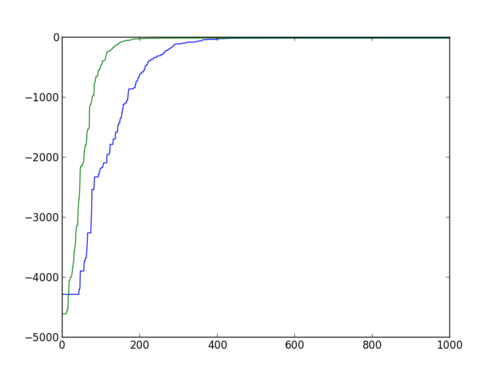import glob from pylab import * def load(dir): f_list = glob.glob(dir + '/*/*/bestfit.dat') num_lines = sum(1 for line in open(f_list[0])) i = 0; data = np.zeros((len(f_list), num_lines)) for f in f_list: data[i, :] = np.loadtxt(f)[:,1] i += 1 return data # compute the median of each column def med(data): median = np.zeros(data.shape[1]) for i in range(0, len(median)): median[i] = np.median(data[:, i]) return median data_low_mut = load('data/low_mut') data_high_mut = load('data/high_mut') # generate the x n_generations = data_low_mut.shape[1] x = np.arange(0, n_generations) # compute the medians med_low_mut = med(data_low_mut) med_high_mut = med(data_high_mut) plot(x, med_low_mut) plot(x, med_high_mut) savefig('medians1.png')
We can use xlim and lim to see a bit better:
xlim(-5, 400) ylim(-5000, 100)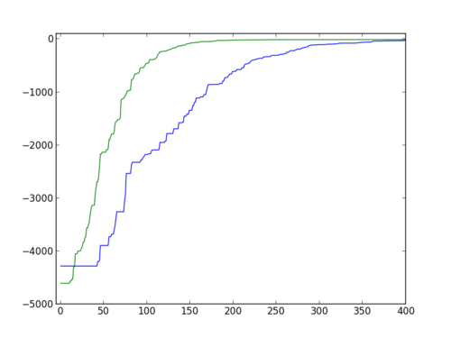
Minimizing ink
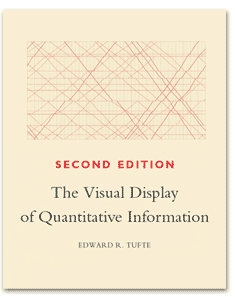Probably the most influential book about data vizualization:
Tufte, Edward R. The visual display of quantitative information., 2nd edition, Cheshire, CT: Graphics press, 2001.
Main principle: maximize the data / ink ratio. In other words, minimize the visual clutter, or remove everything that is not useful to understand the data.
- Example of bad vizualizations:
- Examples of a better vizualization (according to Tufte):
- http://www.edwardtufte.com/bboard/q-and-a-fetch-msg?msg_id=00014g
- http://infosthetics.com/archives/2010/03/obama_loves_infographics.html
- http://joeloughton.com/blog/visualisations/tufte-bar-chart-redesign-in-jquery-flot/
- http://blog.revolutionanalytics.com/2010/03/white-house-taps-edward-tufte-to-explain-the-stimulus.html
{kind=link}
A publication-quality figure
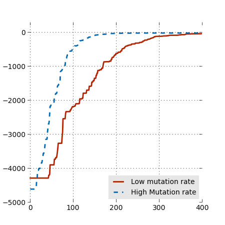We first play with the parameters to get the size right:
params = { 'axes.labelsize': 8, 'text.fontsize': 8, 'legend.fontsize': 10, 'xtick.labelsize': 10, 'ytick.labelsize': 10, 'text.usetex': False, 'figure.figsize': [4.5, 4.5] } rcParams.update(params)
We do not really care about the exact size when our goal is to export a pdf or an eps (for LaTeX) because they are vector formats. However, we care about the ratio (length/width). Moreover, changing the size of the figure will affect the relative size of the fonts.
As a rule of thumb, the font size of your labels should be close to the font size of the figure's caption.
It is also a good idea to increase the linewidths, to be able to make the figure small:
plot(x, med_low_mut, linewidth=2, color='#B22400') plot(x, med_high_mut, linewidth=2, linestyle='--', color='#006BB2')
And don't forget to add a caption. The parameter loc determines the position (1=top right, 2=top left, 3=bottom left, 4=bottom right). We can make the legend a bit prettier by removing the frame and putting a gray background.
legend = legend(["Low mutation rate", "High Mutation rate"], loc=4); frame = legend.get_frame() frame.set_facecolor('0.9') frame.set_edgecolor('0.9')
We might also want to remove some ticks, to lighten the figure.
xticks(np.arange(0, 500, 100))
Last, we can make the figure a bit lighter by removing the frame and adding a light grid:
# put this _before_ the calls to plot and fill_between axes(frameon=0) grid()
Adding quartiles
Documentation
Quartiles are computed with numpy in the same way as the median, but using the function percentile.
def perc(data): median = np.zeros(data.shape[1]) perc_25 = np.zeros(data.shape[1]) perc_75 = np.zeros(data.shape[1]) for i in range(0, len(median)): median[i] = np.median(data[:, i]) perc_25[i] = np.percentile(data[:, i], 25) perc_75[i] = np.percentile(data[:, i], 25) return median, perc_25, perc_75 [...] # compute the medians and 25/75 percentiles med_low_mut, perc_25_low_mut, perc_75_low_mut = perc(data_low_mut) med_high_mut, perc_25_high_mut, perc_75_high_mut = perc(data_high_mut)
We will use the function fill_between to display the quartiles on our plot. We use alpha=0.25 to get a nice transparency effect.
fill_between(x, perc_25_low_mut, perc_75_low_mut, alpha=0.25, linewidth=0, color='#B22400') fill_between(x, perc_25_high_mut, perc_75_high_mut, alpha=0.25, linewidth=0, color='#006BB2')
Documentation
Better colors
Try to go away from the classic 100% red/100% blue/etc. There are many color scheme generators on the web: you select a nice color, and they generate matching colors, given the number of colors you need.
An interesting alternative is to use the python package brewer2mpl, which implements the guidelines published by C. Brewer and colleagues for coloring maps with sequential, divergent, and qualitative colors: http://colorbrewer2.org/

sudo pip install brewer2mpl
And now, in our file:
import brewer2mpl # brewer2mpl.get_map args: set name set type number of colors bmap = brewer2mpl.get_map('Set2', 'qualitative', 7) colors = bmap.mpl_colors
And we can use this array of colors in our plot commands:
fill_between(x, perc_25_low_mut, perc_75_low_mut, \ alpha=0.25, linewidth=0, color=colors[0]) fill_between(x, perc_25_high_mut, perc_75_high_mut, \ alpha=0.25, linewidth=0, color=colors[1]) plot(x, med_low_mut, linewidth=2, color=colors[0]) plot(x, med_high_mut, linewidth=2, linestyle='--', \ color=colors[1])
And, by the way, let's use a simpler grid:
grid(axis='y', color="0.9", linestyle='-', linewidth=1)
The box for the legend is useless now that we don't have vertical lines. Let's remove it (put it white):
frame.set_facecolor('1.0') frame.set_edgecolor('1.0')
Pylab vs Matplotlib
- Matplotlib: object-oriented interface -> better for advanced scripts
- Pylab: matlab-like interface (simple), on top of matplotlib -> simple scripts or interactive use (a la matlab)
Warning: Having these two APIs can be confusing: in many situations, there is a function in pylab and a function in matplotlib. There are almost always two ways of doing something, and the examples found on the web often mix the two approaches.
Until now, we only used pylab functions but we need to use a more 'matplotlib way' to use subplots. Let first convert our last plot to matplotlib. In short:
- we add a call to and store a pointer to the result in a variable fig = figure(). fig is an instance of the class Figure
- we create a subplot and store a pointer to the result in ax ax = fig.add_subplot(111) [we will talk about the arguments of add_subplot in the next section]
- now, all the plot-like commands should act on ax (e.g. ax.plot(...)); the savefig is a method of the Figure class.
So, the final file:
import glob from pylab import * import brewer2mpl # brewer2mpl.get_map args: set name set type number of colors bmap = brewer2mpl.get_map('Set2', 'qualitative', 7) colors = bmap.mpl_colors params = { 'axes.labelsize': 8, 'text.fontsize': 8, 'legend.fontsize': 10, 'xtick.labelsize': 10, 'ytick.labelsize': 10, 'text.usetex': False, 'figure.figsize': [4.5, 4.5] } rcParams.update(params) def load(dir): f_list = glob.glob(dir + '/*/*/bestfit.dat') num_lines = sum(1 for line in open(f_list[0])) i = 0; data = np.zeros((len(f_list), num_lines)) for f in f_list: data[i, :] = np.loadtxt(f)[:,1] i += 1 return data def perc(data): median = np.zeros(data.shape[1]) perc_25 = np.zeros(data.shape[1]) perc_75 = np.zeros(data.shape[1]) for i in range(0, len(median)): median[i] = np.median(data[:, i]) perc_25[i] = np.percentile(data[:, i], 25) perc_75[i] = np.percentile(data[:, i], 75) return median, perc_25, perc_75 data_low_mut = load('data/low_mut') data_high_mut = load('data/high_mut') n_generations = data_low_mut.shape[1] x = np.arange(0, n_generations) med_low_mut, perc_25_low_mut, perc_75_low_mut = perc(data_low_mut) med_high_mut, perc_25_high_mut, perc_75_high_mut = perc(data_high_mut) fig = figure() # no frame ax = fig.add_subplot(111) # now all plot function should be applied to ax ax.fill_between(x, perc_25_low_mut, perc_75_low_mut, alpha=0.25, linewidth=0, color=colors[0]) ax.fill_between(x, perc_25_high_mut, perc_75_high_mut, alpha=0.25, linewidth=0, color=colors[1]) ax.plot(x, med_low_mut, linewidth=2, color=colors[0]) ax.plot(x, med_high_mut, linewidth=2, linestyle='--', color=colors[1]) # change xlim to set_xlim ax.set_xlim(-5, 400) ax.set_ylim(-5000, 300) #change xticks to set_xticks ax.set_xticks(np.arange(0, 500, 100)) legend = ax.legend(["Low mutation rate", "High Mutation rate"], loc=4); frame = legend.get_frame() frame.set_facecolor('1.0') frame.set_edgecolor('1.0') fig.savefig('variance_matplotlib.png')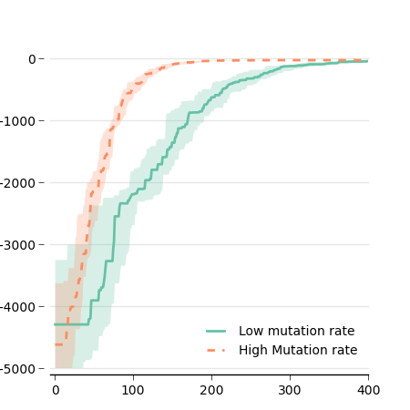
Now that we use the object-oriented API, we can improve our figure a bit by customizing the x-axis and the grid:
ax.spines['top'].set_visible(False) ax.spines['right'].set_visible(False) ax.spines['left'].set_visible(False) ax.get_xaxis().tick_bottom() ax.get_yaxis().tick_left() ax.tick_params(axis='x', direction='out') ax.tick_params(axis='y', length=0) # offset the spines for spine in ax.spines.values(): spine.set_position(('outward', 5)) # put the grid behind ax.set_axisbelow(True)
Subplots
Let's say we want to have two figures side by side, with one figure being a 'zoomed' version of the other. Matplotlib uses the add_subplot method (class Figure), which returns a new instance of Axis. add_subplot takes 3 arguments:
- number of rows
- number of columns
- identifier of this specific subplot
For instance:
- ax1 = fig.add_subplot(2, 1, 1): 2 rows of subplots, 1 column, and ax1 is the first subplot (top)
- ax2 = fig.add_subplot(2, 1, 2): 2 rows, 1 line, and ax2 is the second subplot
- ax1 = fig.add_subplot(1, 2, 1): 1 row, 2 columns, and ax1 is the first subplot (left)
It is possible to use a single integer instead of the 3 arguments, for instance fig.add_subplot(2, 1, 1) can be written fig.add_subplot(211)
To create our figure, we will put all our current code in a function that takes the axis and the limits in argument:
def plot_data(ax, min_gen, max_gen): ... ax.set_xlim(min_gen, max_gen) ax.set_xticks(np.arange(min_gen, max_gen, 100))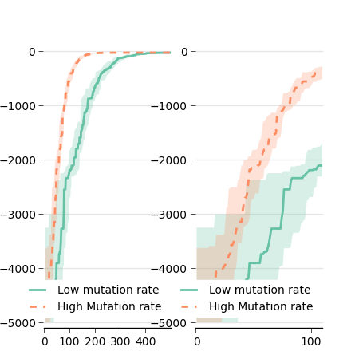
Then we simply call this function with different axes:
fig = figure() ax1 = fig.add_subplot(121) plot_data(ax1, 0, 500) ax2 = fig.add_subplot(122) plot_data(ax2, 0, 110) fig.savefig('variance_subplot.png')
As you can see, the result is far from perfect (yet!). First, we need to adjust the width of the figure:
params = { 'axes.labelsize': 8, 'text.fontsize': 8, 'legend.fontsize': 10, 'xtick.labelsize': 10, 'ytick.labelsize': 10, 'text.usetex': False, 'figure.figsize': [7, 4] # instead of 4.5, 4.5 } rcParams.update(params)
The labels on the y axis are useless on the right plot, so let's remove them. Since the plot is done in the function plot_data, we add an argument to our function that deactivate these labels. We also do not need the legend twice, so we add another argument to deactivate it.
def plot_data(ax, min_gen, max_gen, use_y_labels, use_legend): [...] if not use_y_labels: ax.set_yticklabels([]) if use_legend: [...]
Advice: When you use subplots, put the code for each subplot in a different function (or the same function with different arguments).
The space between the two plots may be a bit too large, and there is also a large white space on the left and right borders. This can be adjusted with subplots_adjust:
fig = figure() fig.subplots_adjust(left=0.09, bottom=0.1, right=0.99, top=0.99, wspace=0.1) # wspace: the amount of width reserved for blank space between subplots # hspace: the amount of height reserved for white space between subplots # be careful that right=position of the right side, not amount of space # same thing for top and bottom
One last thing: we need to label our subplots. This can be easily done with text() method of the class Figure. For instance:
fig.text(0.01, 0.98, "A", weight="bold", horizontalalignment='left', verticalalignment='center') fig.text(0.54, 0.98, "B", weight="bold", horizontalalignment='left', verticalalignment='center')
The result:
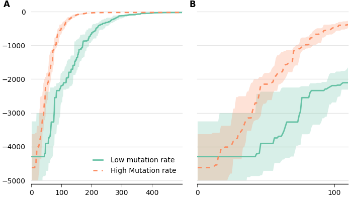Box plot
Use case
You want to know if treatment 'A' performs better than treatment 'B'.
Goal:
- Display the median and the quartiles
- Do not assume that your data are Gaussian (contrary to bars + error bars)
Boxplot
Boxplot:
- Each box extends from the lower to upper quartile values of the data, with a symbol at the median.
- Whiskers extend to the most extreme data point within 1.5 * IQR, where IQR is the interquartile range.
- Flier points (outliers) are those past the end of the whiskers.
Basics
We will use the same data as before and look at generation 100 (because there is not that much to see at generation 500...).
We load the data in the same way as before:
import glob from pylab import * def load(dir): f_list = glob.glob(dir + '/*/*/bestfit.dat') num_lines = sum(1 for line in open(f_list[0])) i = 0; data = np.zeros((len(f_list), num_lines)) for f in f_list: data[i, :] = np.loadtxt(f)[:,1] i += 1 return data data_low_mut = load('data/low_mut') data_high_mut = load('data/high_mut')
As before, we create a figure and a sublot (could be useful later):
fig = figure() ax = fig.add_subplot(111)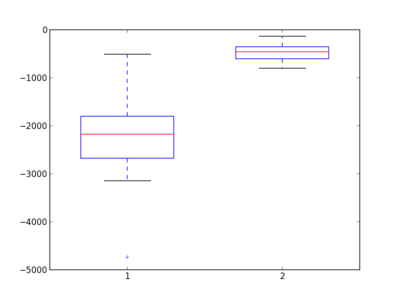
Since we are interested in the 100th generation, we extract the data from the maxtrix:
low_mut_100 = data_low_mut[:, 100] high_mut_100 = data_high_mut[:, 100]
Now we create a boxplot:
bp = ax.boxplot([low_mut_100, high_mut_100])
... easy, but not pretty!
Let's first add the settings we used for the previous plot.
First, image and font size:
params = { 'axes.labelsize': 8, 'text.fontsize': 8, 'legend.fontsize': 10, 'xtick.labelsize': 10, 'ytick.labelsize': 10, 'text.usetex': False, 'figure.figsize': [2.5, 4.5] } rcParams.update(params)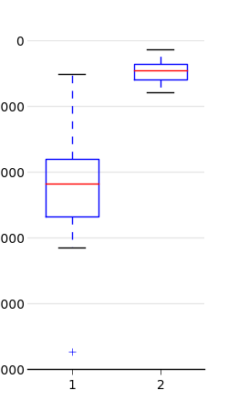
Then we customize the frame:
ax.spines['top'].set_visible(False) ax.spines['right'].set_visible(False) ax.spines['left'].set_visible(False) ax.get_xaxis().tick_bottom() ax.get_yaxis().tick_left() ax.tick_params(axis='x', direction='out') ax.tick_params(axis='y', length=0)
... and add a grid
ax.grid(axis='y', color="0.9", linestyle='-', linewidth=1) ax.set_axisbelow(True)
Better but still not pretty...
Colored boxes
Unfortunately, customizing the look of the boxes is not straighforward.
Given an instance of boxplot:
bp = ax.boxplot([data_fit, data_onp])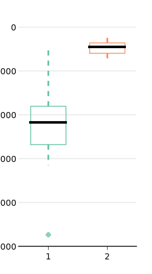
We need to iterate over all the objects to change their attributes:
# colors, as before import brewer2mpl bmap = brewer2mpl.get_map('Set2', 'qualitative', 7) colors = bmap.mpl_colors for i in range(0, len(bp['boxes'])): bp['boxes'][i].set_color(colors[i]) # we have two whiskers! bp['whiskers'][i*2].set_color(colors[i]) bp['whiskers'][i*2 + 1].set_color(colors[i]) bp['whiskers'][i*2].set_linewidth(2) bp['whiskers'][i*2 + 1].set_linewidth(2) # top and bottom fliers # (set allows us to set many parameters at once) bp['fliers'][i * 2].set(markerfacecolor=colors[i], marker='o', alpha=0.75, markersize=6, markeredgecolor='none') bp['fliers'][i * 2 + 1].set(markerfacecolor=colors[i], marker='o', alpha=0.75, markersize=6, markeredgecolor='none') bp['medians'][i].set_color('black') bp['medians'][i].set_linewidth(3) # and 4 caps to remove for c in bp['caps']: c.set_linewidth(0)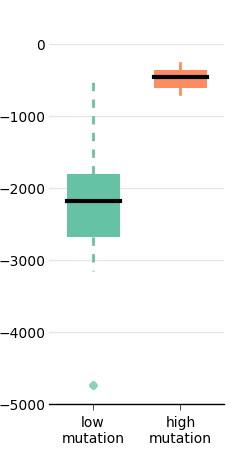
I don't know any simple way to fill the boxes. A workaround is to redraw them (this is not a subtle way, but it works!):
for i in range(len(bp['boxes'])): box = bp['boxes'][i] box.set_linewidth(0) boxX = [] boxY = [] for j in range(5): boxX.append(box.get_xdata()[j]) boxY.append(box.get_ydata()[j]) boxCoords = zip(boxX,boxY) boxPolygon = Polygon(boxCoords, facecolor = colors[i], linewidth=0) ax.add_patch(boxPolygon)
Finally, to give more space to the y labels:
fig.subplots_adjust(left=0.2)
And to have x labels:
ax.set_xticklabels(['low\nmutation','high\nmutation'])
Stars (statistical significance)
More about tests
Sheskin, David J. "Handbook of Parametric and Nonparametric Statistical Procedures." (2011). Chapman and Hall/CRC. ISBN: 1439858012
When comparing two treatments, we usually use stars to represent the p-value that results from a (well-chosen) statistical test.
There are parametric statistical tests (which assumes that the distribution of the data is known) and non-parametric tests (which do assume that the distribution is known). The classic Student's t-test is a parametric test that only works when the data are normally distributed. As explained before, data are rarely normally distributed when we compare algorithms (but this is often the case in biology or in physics). A good non-parametric alternative to the t-test is the Mann-Whitney U-test (called ranksum in matlab, or Wilcoxon test, or Man-Whitney-Wilcoxon).
In python, there is an implementation in Scipy (a scientific package on top of numpy; if you don't have it yet: sudo pip install scipy or apt-get install it):
import scipy.stats z, p = scipy.stats.mannwhitneyu(data1, data2)
We should usually use a two-tailed test because we have no a priori about one treatment being better than the other. We should therefore multiply p by two to obtain the p-value:
p_value = p * 2
This value is usually converted to stars as follows:
def stars(p): if p < 0.0001: return "****" elif (p < 0.001): return "***" elif (p < 0.01): return "**" elif (p < 0.05): return "*" else: return "-" [...] z, p = scipy.stats.mannwhitneyu(low_mut_100, high_mut_100) p_value = p * 2 s = stars(p)
Documentation
The next step is to draw these stars on our plot using the annotate method (you may have to fine-tune the y-coordinates of the stars).
y_max = np.max(np.concatenate((low_mut_100, high_mut_100))) y_min = np.min(np.concatenate((low_mut_100, high_mut_100))) print y_max ax.annotate("", xy=(1, y_max), xycoords='data', xytext=(2, y_max), textcoords='data', arrowprops=dict(arrowstyle="-", ec='#aaaaaa', connectionstyle="bar,fraction=0.2")) ax.text(1.5, y_max + abs(y_max - y_min)*0.1, stars(p_value), horizontalalignment='center', verticalalignment='center')
And the final file:
import glob from pylab import * import scipy.stats import brewer2mpl bmap = brewer2mpl.get_map('Set2', 'qualitative', 7) colors = bmap.mpl_colors params = { 'axes.labelsize': 8, 'text.fontsize': 8, 'legend.fontsize': 10, 'xtick.labelsize': 10, 'ytick.labelsize': 10, 'text.usetex': False, 'figure.figsize': [2.5, 4.5] } rcParams.update(params) def load(dir): f_list = glob.glob(dir + '/*/*/bestfit.dat') num_lines = sum(1 for line in open(f_list[0])) i = 0; data = np.zeros((len(f_list), num_lines)) for f in f_list: data[i, :] = np.loadtxt(f)[:,1] i += 1 return data def stars(p): if p < 0.0001: return "****" elif (p < 0.001): return "***" elif (p < 0.01): return "**" elif (p < 0.05): return "*" else: return "-" data_low_mut = load('data/low_mut') data_high_mut = load('data/high_mut') low_mut_100 = data_low_mut[:, 100] high_mut_100 = data_high_mut[:, 100] fig = figure() ax = fig.add_subplot(111) bp = ax.boxplot([low_mut_100, high_mut_100], notch=0, sym='b+', vert=1, whis=1.5, positions=None, widths=0.6) for i in range(len(bp['boxes'])): box = bp['boxes'][i] box.set_linewidth(0) boxX = [] boxY = [] for j in range(5): boxX.append(box.get_xdata()[j]) boxY.append(box.get_ydata()[j]) boxCoords = zip(boxX,boxY) boxPolygon = Polygon(boxCoords, facecolor = colors[i % len(colors)], linewidth=0) ax.add_patch(boxPolygon) for i in range(0, len(bp['boxes'])): bp['boxes'][i].set_color(colors[i]) # we have two whiskers! bp['whiskers'][i*2].set_color(colors[i]) bp['whiskers'][i*2 + 1].set_color(colors[i]) bp['whiskers'][i*2].set_linewidth(2) bp['whiskers'][i*2 + 1].set_linewidth(2) # top and bottom fliers bp['fliers'][i * 2].set(markerfacecolor=colors[i], marker='o', alpha=0.75, markersize=6, markeredgecolor='none') bp['fliers'][i * 2 + 1].set(markerfacecolor=colors[i], marker='o', alpha=0.75, markersize=6, markeredgecolor='none') bp['medians'][i].set_color('black') bp['medians'][i].set_linewidth(3) # and 4 caps to remove for c in bp['caps']: c.set_linewidth(0) ax.spines['top'].set_visible(False) ax.spines['right'].set_visible(False) ax.spines['left'].set_visible(False) ax.get_xaxis().tick_bottom() ax.get_yaxis().tick_left() ax.tick_params(axis='x', direction='out') ax.tick_params(axis='y', length=0) ax.grid(axis='y', color="0.9", linestyle='-', linewidth=1) ax.set_axisbelow(True) ax.set_xticklabels(['low\nmutation','high\nmutation']) # the stars z, p = scipy.stats.mannwhitneyu(low_mut_100, high_mut_100) p_value = p * 2 s = stars(p) y_max = np.max(np.concatenate((low_mut_100, high_mut_100))) y_min = np.min(np.concatenate((low_mut_100, high_mut_100))) print y_max ax.annotate("", xy=(1, y_max), xycoords='data', xytext=(2, y_max), textcoords='data', arrowprops=dict(arrowstyle="-", ec='#aaaaaa', connectionstyle="bar,fraction=0.2")) ax.text(1.5, y_max + abs(y_max - y_min)*0.1, stars(p_value), horizontalalignment='center', verticalalignment='center') fig.subplots_adjust(left=0.2) savefig('boxplot5.png')
Generated with: rst2html.py --syntax-highlight=short --stylesheet=dana.css,style.css matplotlib.rst > matplotlib.html